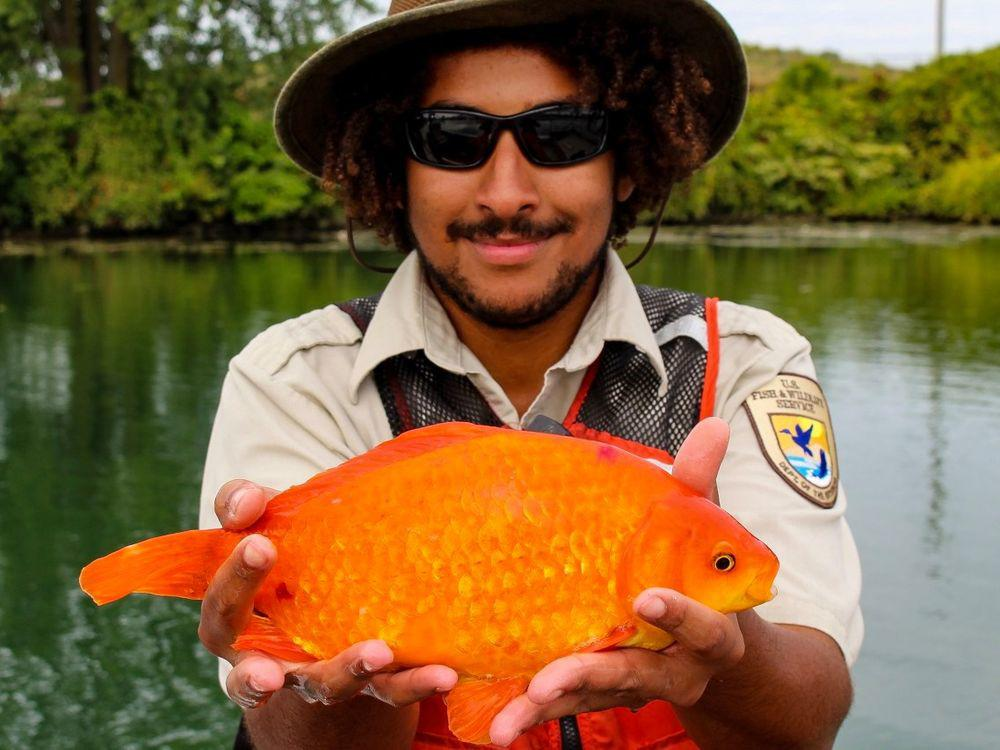
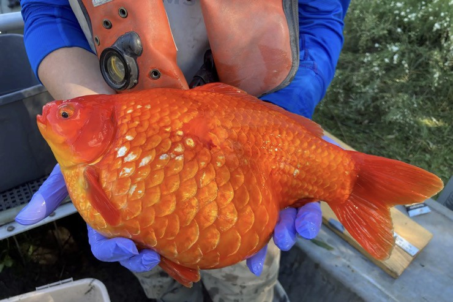

Loài sinh vật nuôi làm cảnh, thả vào tự nhiên phát triển "khổng lồ" gây lo ngại ở Canada
Khi được thả vào tự nhiên, loài cá vàng nuôi làm cảnh có thể phát triển đến kích thước khổng lồ và tàn phá môi trường sống của các loài sinh vật bản địa. Các nhà nghiên cứu Canada đang tìm hiểu tập tính sinh trưởng của cá vàng ngoài tự nhiên để có thể loại bỏ hàng loạt.
Cá vàng là loài cá cảnh có nguồn gốc từ Đông Á, được nuôi làm vật trang trí với hi vọng có thể đem lại may mắn. Những con cá vàng thường chỉ dài vài cm và rất dễ nuôi. Nhưng khi được thả vào tự nhiên, cá vàng có thể phát triển một cách không kiểm soát và không bị giới hạn bởi nguồn thức ăn. Chúng có thể phát triển với kích thước khổng lồ so với cá cảnh, tàn phá hệ sinh thái bản địa. "Cá vàng có thể ăn bất cứ thứ gì", Christine Boston, nhà nghiên đến từ Bộ Thủy sản và Đại dương Canada, nói trên tờ New York Times. Trong nhiều năm, bà Boston và các đồng nghiệp đã theo dõi sự phát triển của các vàng khổng lồ ở khu vực cảng Hamilton, mũi phía tây của hồ Ontario, cách Toronto khoảng 56km về phía tây nam. Môi trường tự nhiên ở khu vực này đã bị tàn phá nặng nề bởi sự phát triển của công nghiệp và đô thị, cũng như bởi các loài xâm lấn. Đây là một trong những khu vực môi trường bị suy thoái nhất của vùng Ngũ Đại Hồ (Great Lakes) ở Canada. Bà Boston nói nhóm nghiên cứu đang xác minh khu vực sinh sống chủ yếu của quần thể cá vàng khổng lồ để có thể tiêu hủy chúng. "Chúng tôi đã tìm ra vị trí trước khi chúng bắt đầu sinh sản. Đó là cơ hội tốt để loại bỏ chúng", bà Boston nói. Bà Boston cho biết, cá vàng cái không những phát triển nhanh mà còn có thể sinh sản nhiều lần trong một mùa. Cá vàng lần đầu tiên được phát hiện ở cảng Hamilton vào những năm 1960, nhưng phần lớn đã chết vào những năm 1970 do ô nhiễm công nghiệp. Đầu những năm 2000, cá vàng khổng lồ tái xuất và phát triển mạnh đến ngày nay
á vàng khổng lồ đang tạo ra mối đe dọa với hệ sinh thái ở Canada. Nhóm nghiên cứu của bà Boston phát hiện những con cá vàng to bằng một quả bóng đá. "Chúng tôi phát hiện những con cá vàng dài tới 40cm, kích thước mà những kẻ săn mồi cũng phải e ngại. Một con cá vàng lớn như vậy có thể nuốt chửng rất nhiều thứ", bà Boston chia sẻ. Để theo dõi những con cá vàng, nhóm nghiên cứu đã gây mê 19 con trưởng thành, cấy thiết bị theo dõi có kích thước bằng viên pin AA vào bụng chúng. Thiết bị gửi tín hiệu đến các máy thu âm được đặt xung quanh khu vực vịnh, cung cấp cho các nhà nghiên cứu bản đồ về vị trí của chúng. 8 con cá đã chết nhưng 11 con còn lại đã giúp nhóm nghiên cứu phát hiện hành vi sinh trưởng. Chúng có xu hướng trải qua mùa đông ở vùng nước sâu và di chuyển đến vùng nước nông hơn vào mùa xuân, nơi chúng chuẩn bị sinh sản. Bà Boston cho biết, có một số lựa chọn bắt và tiêu hủy cá vàng, gồm dùng lưới chuyên dụng hoặc “câu cá bằng điện”. Nicholas Mandrak, giáo sư tại Đại học Toronto Scarborough, cho biết mặc dù cá vàng du nhập vào Bắc Mỹ vào cuối những năm 1800 nhưng số lượng cá vàng hoang dã chỉ bắt đầu tăng mạnh trong hai thập kỷ qua. Sự bùng nổ số lượng cá vàng một phần do người dân ở các khu vực đông dân cư thả chúng vào hồ nước. Biến đổi khí hậu có thể đóng vai trò vì cá vàng có khả năng thích ứng với vùng nước ấm và ít oxy. "Có tới hàng triệu con cá vàng sinh sống ở vùng Ngũ Đại Hồ, nếu không muốn nói là hàng chục triệu", giáo sư Mandrak nói trên tờ New York Times. Theo giáo sư Mandrak, nhà chức trách Canada có xu hướng bỏ qua mối đe dọa mà cá vàng tạo ra với hệ sinh thái. "Họ nghĩ rằng chúng đã tồn tại trong 150 năm và con người không thể làm gì được chúng", giáo sư Mandrak nói. Anthony Ricciardi, giáo sư về sinh thái xâm lấn tại Đại học McGill ở Montreal (Canada), nói không chỉ cá vàng khổng lồ có thể đe dọa hệ sinh thái mà còn cả những con cá vàng nhỏ hơn. "Mọi người thường lầm tưởng rằng cá vàng nhỏ bé và dễ thương nên thả chúng vào tự nhiên sẽ không vấn đề gì. Đó là điều gây lo ngại", giáo sư Ricciardi nói.
{kind=link}
{kind=link}